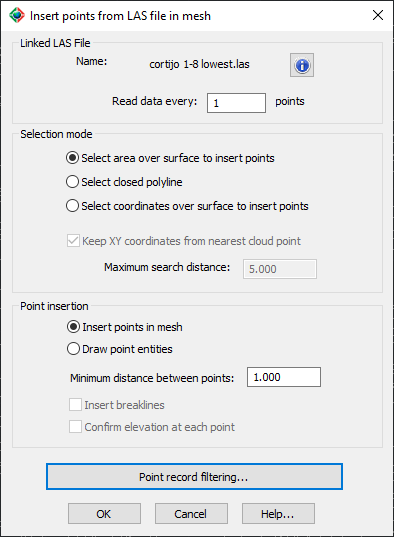
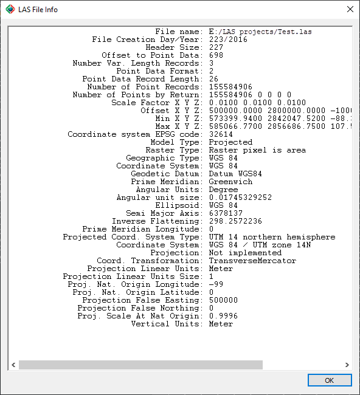
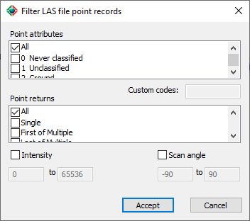

|
|
Toolbar:
Menu: CAD-Earth > Mesh > Mesh Explorer. Mesh Explorer node:
Context Menu: Insert > Point from a linked LAS file
|
|
|
Command line: CE_MESHEXPLORER
CAD-Earth version: Premium. |
(1).png)
.png)
.png)
(1).png)
Command description:
Insert vertices in a terrain mesh imported from a LAS file, selecting a point, an area, or a closed polyline in the drawing.

•Name. The file from which the point information will be read. If you select the info button, the file properties will be displayed, showing the file path, LIDAR and georeference parameters.

ØSelection mode.
•Select area over surface to insert points. Points inside a specified area will be inserted.
•Select closed polyline. Points inside a closed polyline will be inserted.
•Select coordinates over surface to insert points. A vertex will be inserted at every point specified.
•Keep XY coordinates from nearest cloud point. The point selected will snap to the nearest point found in the LAS file.
•Maximum search distance. The nearest point will be searched at a radius with this value from the point selected.
ØPoint insertion.
•Insert points in mesh. Vertices will be inserted into the mesh.
•Draw point entities. Regular point entities will be drawn. Vertices will not be inserted.
•Minimum distance between points. Points or vertices inserted inside the defined area will be at least this distance apart.
•Insert break lines. Triangulation will be reordered while specifying points, to avoid any triangle sides crossing the line segments.
•Confirm elevation at each point. The calculated elevation will be displayed before inserting a point, to accept it or to type a specific elevation, or to select a reference point from where the elevation will be taken, optionally specifying an elevation offset.
ØPoint record filtering. The following dialog box will be shown. Only points having the filter attributes selected will be processed.

ØPoint attributes. If the LAS file has points with the selected attributes defined, only points with those attributes checked will be processed.
ØCustom codes. If you select the 'Custom defined' point attribute, you can type in this box the attribute code numbers separated by commas.
ØPoint returns. Only points with returns of the type selected will be processed.
ØIntensity and scan angle. Only points with intensity between the range specified will be processed.
Tips:
•If the index file is not present in the LAS file folder, a message will display to confirm if you wish to create it. This index file will speed up the point searching in the LAS file, avoiding having to read the entire file to search for points. The index file will have the same name as the LAS file but with a lax extension. The index file will take several minutes to be created, but it will be created only once.
•The area to insert points or vertices can be defined in a clockwise or counter-clockwise direction.
•Use this command to recover point information lost after you decimate or refine a mesh imported from a LAS file.
Copyright © 2023 Arqcom Software
Google Earth© is a registered trademark of Google inc. All other trademarks are the property of their respective owners.